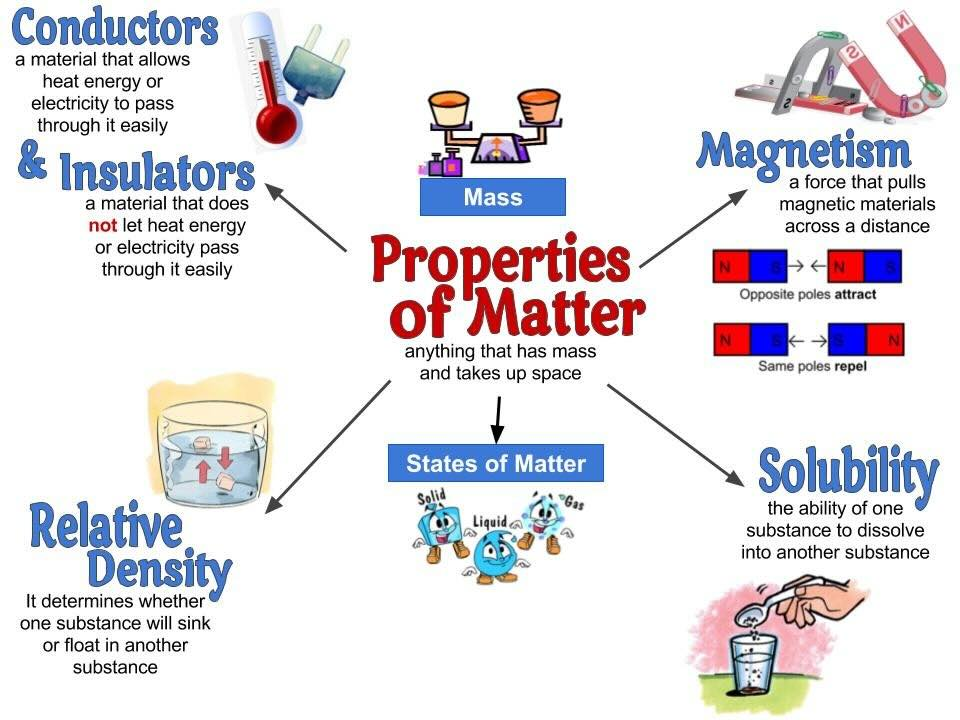
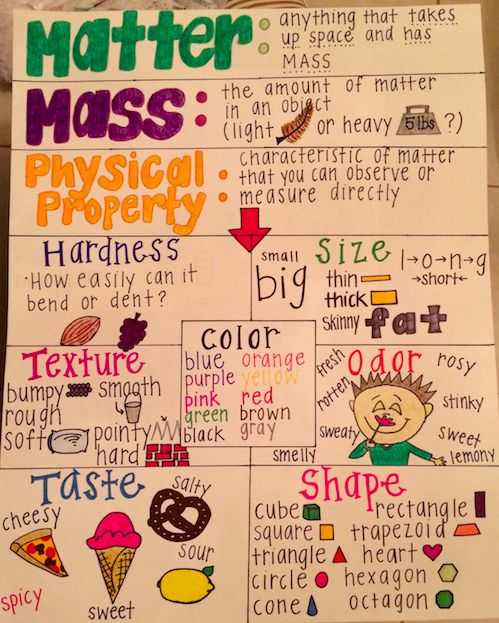
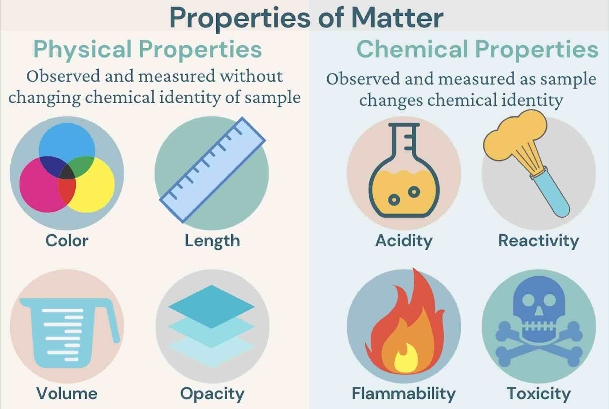
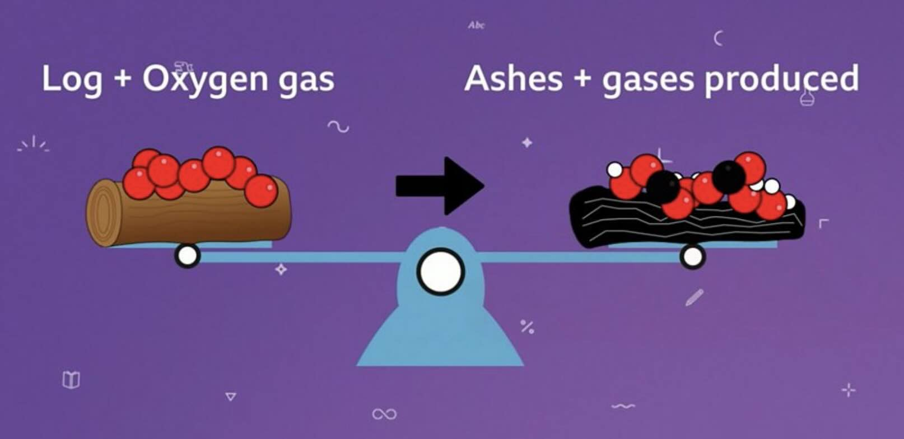
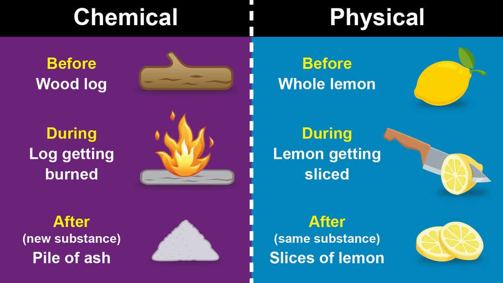
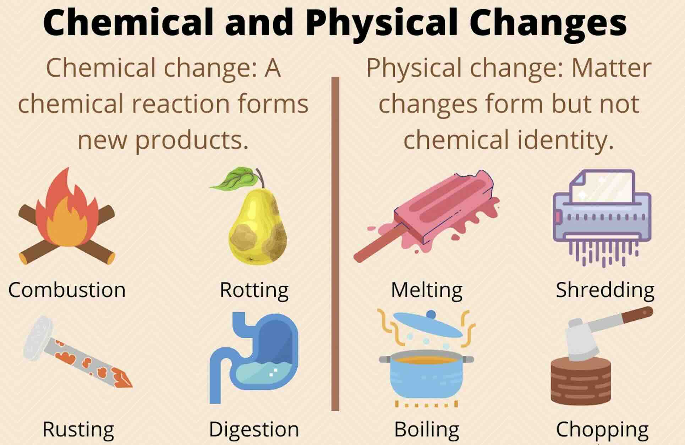
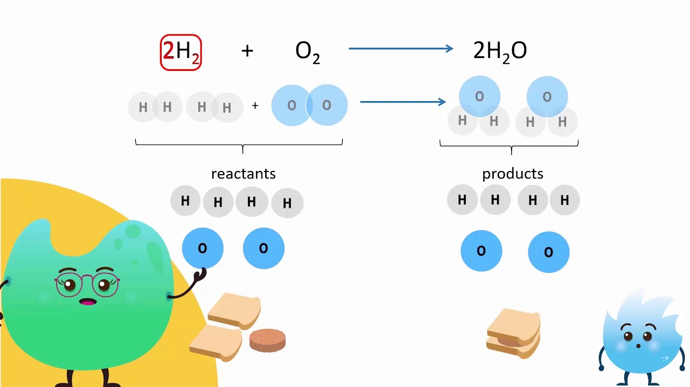
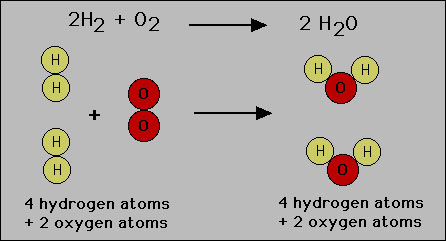
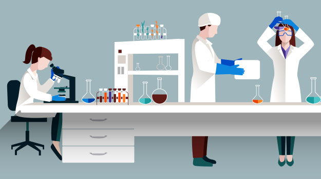
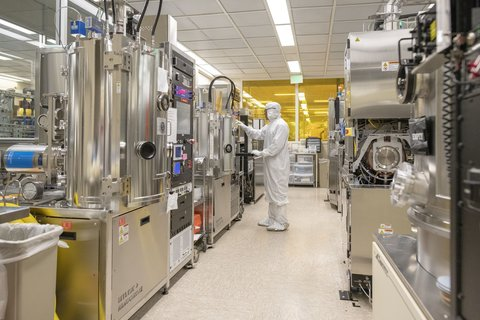

Chemical Reactions: Rearranging Atoms into New Substances
What Is a Chemical Reaction?
A chemical reaction is a process in which new substances are formed. During this process, atoms from the starting substances (called reactants) are regrouped into new substances (called products) that have different properties. One of the most important principles to remember is that the number of atoms before and after a chemical reaction always stays the same.

A vivid chemical reaction showing color change, one of the common indicators that a chemical reaction is occurring.
The atoms you start with are simply regrouped into new substances with different properties!
Properties of Matter Change During Chemical Reactions
All matter has properties that can be observed and recorded. These properties help us identify substances and predict how they might interact with other substances.

Different materials show different properties that can be observed and measured.
Properties of matter can be divided into two main categories:
Physical Properties
- Color
- State (solid, liquid, gas)
- Density
- Melting/boiling points
- Solubility
- Malleability/ductility

Physical properties can be observed without changing the substance's composition.
Chemical Properties
- Flammability
- Reactivity with other substances
- Toxicity
- Heat of combustion
- pH (for solutions)
- Oxidation states

Chemical properties relate to how a substance can transform into other substances.
When substances undergo chemical reactions, their properties change because the atoms rearrange to form new substances with different characteristics.
Example: When iron (which is magnetic and silver-colored) reacts with oxygen in the air, it forms rust (iron oxide), which is reddish-brown and not magnetic. The properties have changed because a new substance has formed!
The Law of Conservation of Matter
The total number of atoms does not change in a chemical reaction. This is called the Law of Conservation of Matter, which states that matter cannot be created or destroyed in chemical reactions, only rearranged.

In a chemical reaction, atoms rearrange but their total number remains the same - demonstrating conservation of mass.
Atoms can only rearrange themselves in a chemical reaction—they cannot be created or destroyed!
Because of this law, the final mass after a reaction has taken place will be identical to the initial mass before the reaction took place, even though new substances have been formed.
Example: In a combustion reaction of propane (C₃H₈) with oxygen (O₂), we get:
C₃H₈ + 5O₂ → 3CO₂ + 4H₂O
Let's count the atoms on both sides:
- Left side (reactants): 3 carbon atoms, 8 hydrogen atoms, and 10 oxygen atoms
- Right side (products): 3 carbon atoms, 8 hydrogen atoms (in H₂O), and 10 oxygen atoms (6 in CO₂ and 4 in H₂O)
The number of each type of atom is the same on both sides, demonstrating conservation of matter!
Chemical Changes vs. Physical Changes
It's important to understand the difference between chemical changes and physical changes:

The key distinction: chemical changes produce new substances while physical changes don't.
| Chemical Changes |
Physical Changes |
| New substances are formed |
No new substances are formed |
| Properties of the substances change |
State or appearance may change, but fundamental properties stay the same |
| Atoms rearrange to form new compounds |
Molecules just move around or change state |
| Examples: burning, rusting, cooking food |
Examples: melting, freezing, breaking |

Examples showing the difference between chemical changes (like burning) and physical changes (like melting).
Important Note: Many students think dissolving is a physical change, but it's often a chemical reaction! When a substance dissolves, it can break down or interact with the solvent, resulting in new chemical arrangements.
Think about it: When ice melts, it's still H₂O—just in liquid form. That's a physical change. But when iron rusts, it's no longer just iron—it's a new substance called iron oxide. That's a chemical change!
Reactants and Products in Chemical Reactions
In chemical reactions, we call the starting substances "reactants" and the substances that form "products." Remember, the atoms from the reactants rearrange to form the products.

Hydrogen and oxygen atoms rearrange to form water molecules in this chemical reaction.
Example of a chemical reaction:
2H₂ + O₂ → 2H₂O
- Reactants: hydrogen gas (H₂) and oxygen gas (O₂)
- Product: water (H₂O)
In this reaction, the hydrogen and oxygen atoms rearrange to form water molecules, which have very different properties from the original gases.

Molecular model showing how atoms rearrange when hydrogen and oxygen react to form water.
Products usually have different properties than the reactants, even though the total amount of mass in the system has been conserved.
Signs That a Chemical Reaction Has Occurred
How do we know when a chemical reaction has taken place? Here are some common signs:
- Color change
- Production of a gas (bubbles)
- Formation of a solid (precipitate)
- Temperature change (heat released or absorbed)
- Light production
- Odor change
Think about these examples:
- When you bake a cake, the ingredients change color and texture, and a new smell develops.
- When antacid tablets are dropped in water, bubbles form as a gas is produced.
- When vinegar and baking soda mix, bubbles form and the mixture feels cold.
All these are signs of chemical reactions!
Catalysts in Chemical Reactions
A catalyst is a substance that speeds up a chemical reaction without becoming part of the final product. It works by lowering the energy needed to start the reaction, but it remains unchanged at the end.
Important: Catalysts are not consumed in reactions. They help the reaction happen faster, but they don't become part of the new substances formed.
Example: In your body, enzymes act as catalysts. An enzyme called catalase helps break down hydrogen peroxide (H₂O₂) into water (H₂O) and oxygen (O₂) very quickly. Without the catalase, this reaction would happen much more slowly.
Molecules: Groups of Atoms Working Together
Molecules are formed when two or more atoms bond together. The properties of a molecule are different from the properties of the individual atoms that make it up.
Examples of molecules:
- Oxygen gas (O₂): two oxygen atoms bonded together
- Water (H₂O): two hydrogen atoms and one oxygen atom bonded together
- Carbon dioxide (CO₂): one carbon atom and two oxygen atoms bonded together
In a chemical reaction, molecules can break apart and recombine to form new molecules with different properties.
Chemical Reactions in the Real World
Chemical reactions are happening all around us! They are essential to many fields and careers, including:
- Medicine (creating pharmaceuticals)
- Food industry (cooking, preserving)
- Manufacturing (making plastics, metals)
- Agriculture (fertilizers, pesticides)
- Energy production (combustion, batteries)
- Environmental science (pollution control, water treatment)

Chemists work in laboratories studying reactions and developing new compounds.
Chemical engineers and material scientists study chemical reactions to advance space exploration, make medicines, and form new products that solve unique problems.

Chemical engineers apply chemistry principles to develop industrial processes and products.
Think about it: Every time you cook food, take medicine, drive a car, or even breathe, you're participating in chemical reactions!
Practice Your Understanding
Question 1: What's the main difference between a physical change and a chemical change?
Think about whether new substances form or not.
Question 2: Why does the mass stay the same before and after a chemical reaction, even though the substances have changed?
Think about what happens to atoms during a reaction.
Question 3: In the combustion reaction of propane (C₃H₈ + 5O₂ → 3CO₂ + 4H₂O), why are there 3 carbon dioxide molecules and 4 water molecules formed?
Think about how many atoms of each type need to be accounted for.
Question 4: A piece of steel wool is burned. Before burning, it was magnetic and silver-colored. After burning, it is reddish-brown and no longer magnetic. What can you conclude?
Think about what changes in properties tell us.
Question 5: What role does a catalyst play in a chemical reaction? Does it affect the number of atoms?
Think about what a catalyst does and whether it becomes part of the products.
Key Vocabulary
| Term |
Definition |
| Atoms |
The smallest particle of matter made up of protons, neutrons, and electrons. |
| Molecules |
More than one atom combined to form a substance (e.g., oxygen – O₂). |
| Reactants |
Substances that are combined to form products in a chemical reaction. |
| Products |
The result of substances being combined in a chemical reaction. |
| Chemical change |
Chemicals combining to cause new substances to be formed. |
| Physical change |
A change in state of matter where no new substance is formed. |
| Law of Conservation of Matter |
Matter cannot be created or destroyed in chemical reactions, only rearranged. |
| Catalyst |
A substance that speeds up a chemical reaction without being consumed in the reaction. |
Summary
- A chemical reaction is a process where atoms rearrange to form new substances with different properties.
- The Law of Conservation of Matter states that matter cannot be created or destroyed in chemical reactions, so the total number of atoms remains the same.
- In a chemical reaction, reactants combine to form products.
- Chemical changes result in new substances being formed, while physical changes don't create new substances.
- We can identify chemical reactions by changes in properties such as color, temperature, odor, or the production of gas or solid.
- Catalysts speed up chemical reactions without becoming part of the products.
- Chemical reactions are essential to many fields and everyday life.
Remember: In any chemical reaction, the atoms just rearrange themselves—they're never created or destroyed!